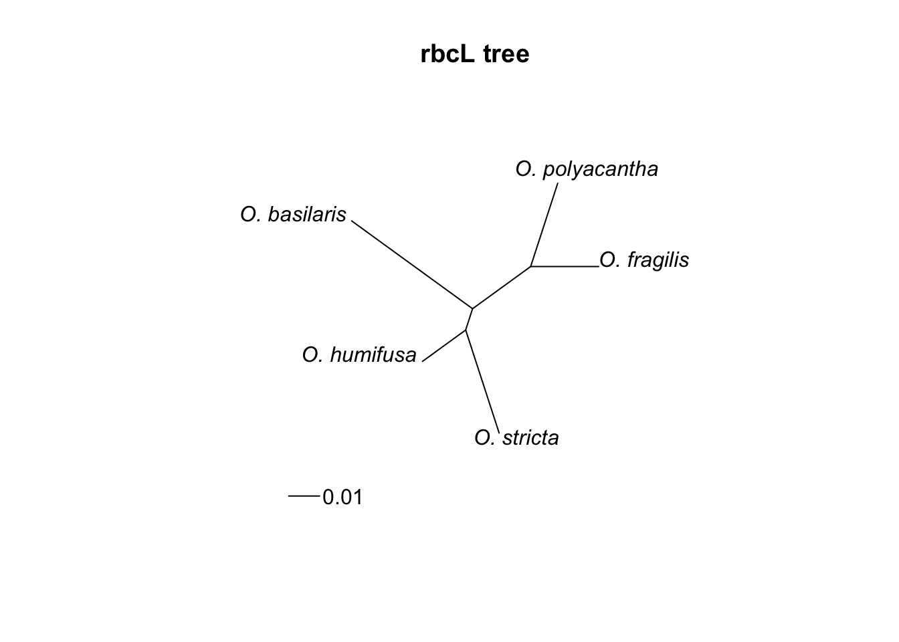

Lily-like monocots, Iridaceae, Orchidaceae, and Phylogenetics in R
Lily-like Monocots
1. Usually herbs.
2. Stems often modified as rhizomes, bulbs, or corms. Leaves often linear or strap shaped, simple, usually alternate, but may be basal or whorled, without stipules.
3. Flowers usually perfect, actinomorphic, tepals 6, free or partially fused, or sometimes a hypanthium present. Stamens 6 (rarely 3). Pistil compound, ovary superior or inferior (those whith umbellate inflorescences and inferior ovaries are often put in the Amaryllidaceae), carpels 3, placentation axile.
4. Fruit a capsule or berry.
5. About 240 genera and 4,200 species, widely distributed.
Traditionally the bulk of the lily-like petaloid monocots were divided into two main families Liliaceae sensu lato (lily family mostly with superior ovary) and Amaryllidaceae s.l. (daffodil family mostly with inferior ovary). Cronquist took the approach of having a very broadly defined Liliaceae, which included both these families as well as others. The APG found that plants belonging to Cronquist’s Liliaceae were highly heterogeneous (a circumstance variously known as a “rag-bag” or “taxodump”). The components of this broadly circumscribed Liliaceae sensu latissimo are assignable to both the APG orders Asparagales and Liliales. The old Liliaceae has therefore been broken up and lily-like plants have been assigned to a number of smaller monophyletic families.
LILIALES sensu APG Comprises:
Alstroemeriaceae, Campynemataceae, Colchicaceae (autumn crocus family), Corsiaceae, Liliaceae (lily family), Luzuriagaceae, Melanthiaceae (trillium family), Petermanniaceae, Philesiaceae, Rhipogonaceae, Smilacaceae (smilax family).
ASPARAGALES sensu APG Comprises:
Agapanthaceae (Alliaceae s.l.), Agavaceae (agave family), Alliaceae (onion family), Amaryllidaceae (daffodil family) (Alliaceae s.l.), Aphyllanthaceae, Asparagaceae (asparagus family), Asphodelaceae, Asteliaceae, Blandfordiaceae, Boryaceae, Doryanthaceae, Hemerocallidaceae (day lily family), Hyacinthaceae (hyacinth family), Hypoxidaceae, Ixioliriaceae, Lanariaceae, Laxmanniaceae, Ruscaceae (butcher’s broom family), Tecophilaeaceae, Themidaceae, Xanthorrhoeaceae, Xeronemaceae, Iridaceae (irises), Orchidaceae (orchids).
It should be noted that the Agapanthaceae (Agapanthus family), the Alliaceae (onion family) and the Amaryllidaceae (daffodil family) are all closely related and may be united in a single family (Alliaceae s.l.)
Diagrams

Leaves
Leaves in these families tend to be linear or strap-shaped, simple, entire, alternate (but sometimes basal or whorled), and with parallel leaf venation. This is a good search image for all of the families you’ll be learning in this lab (lily-like monocots, Iridaceae, and Orchidaceae), and monocots in general. Here are some examples from members of the lily-like monocots:


In many cases, the stems are modified into underground bulbs, corms, or rhizomes. You are probably familiar with the genus Allium, which has been cultivated extensively by humans and includes onion, garlic, scallion, shallot, leek, and chives. These species (and many others in the Amaryllidaceae) have modified leaves and stems. The stem is modified down to a little nub or plate at the center/base of the bulb, and is surrounded by fleshy scale-like leaves (picture the layers of an onion). The less-modified leaves that emerge from the bulb are long, hollow, and cylindrical in shape.


Bulbs can also be found in the Asparagaceae family, as seen in the “pregnant onion” (Ornithogalum caudatum). In this case, the majority of the bulb sits above-ground, unlike what we typically see in Allium.

Flowers
Species in the genus Lilium (which can be bought as ornamentals from most florists) are nice and big, and do a great job of displaying the typical flower structure of lily-like monocots. Note the undifferentiated sepal and petal whorls (thus we call them tepals) and unfused parts in 3’s. How many carpels do you think make up the ovary of this flower? Ovaries can either be superior or inferior depending on the family.


Here’s a cross-section of the ovary:
You may have noticed the green patches near the base of each petal. Those are actually the nectaries! Taking a closer look, you can see the glistening nectar being exuded along these organs.
Here are more examples of beautiful, showy, and fancy lily-like monocots :-). Notice how they all have parts in 3’s and are generally actinomorphic.
Clintonia uniflora (Liliaceae)

Here you can see the beautiful wild daffodil, which has a trumpet-shaped corolla appendage called a “corona”. All species in the genus contain a poisonous alkaloid called lycorine.
Narcissus pseudonarcissus (Amaryllidaceae)

Inflorescences
Many species in the Liliaceae have a simple raceme inflorescence:

In Amaryllidaceae and Alliaceae (the onion family), however, we often find umbel or pseudo-umbel inflorescences similar to what we saw in Apiaceae. These inflorescences are often subtended by a “spathe” bract, which enclose the flowers while they are developing.
Allium sp. (Alliaceae)


Fruit
Fruit in these families are typically capsules or berries. Here, you can see a dehisced Lilium capsule (notice the cool teeth in between the ovary segments) and winged seeds.

Here you can see the beautiful berries of False Solomon’s seal (Maianthemum racemosum).


Knowledge Check 9.1
Draw any of the lily-like monocots pictured above (or your favourite species if you have one ;-)) and label all visible flower parts. Take note of the number of parts in each whorl, the inflorescence type, and whether or not a spathe bract is present.
Iridaceae
The Iris family
1. Herbs
2. Underground stems modified as rhizomes, bulbs, or corms. Leaves simple, mostly basal and linear, usually equitant.
3. Flowers perfect, actinomorphic or zygomorphic, subtended by a spathe like bract. Tepals 6, free or partially fused. Stamens 3. Pistil compound, ovary inferior, carpels 3, placentation usually axile.
4. Fruit a capsule.
5. About 60 genera and 1,500 species, widely distributed.
Only 2 genera, Sisyrinchium and Iris, are found in B.C. Many genera are cultivated as ornamentals, including Crocus, Iris, Freesia, and Gladiolus.
Diagrams

Leaves
Similar to the lily families, members of the Iridaceae also have simple, linear, and entire leaves with parallel venation and stems that are modified into underground corms or rhizomes. However, leaves in Iridaceae tend to be “equitant”, which means that they are straddling or overlapping each other. This is a reliable character to help you differentiate the Iridaceae from the lily-like monocots. Here are some examples:


Flowers
Also similar to the lily families, the flowers in Iridaceae tend to be large and beautiful with parts in 3’s. The ovary is always inferior in Iridaceae, and the flowers are typically subtended by a conspicuous spathe bract. Flowers can either be actinomorphic or zygomorphic.
Here you can see the parts in 3’s and inferior ovary of Iris domestica.


Many species of Iris (including the ones whose data you analyzed for your first R exercise in Lab 6) have a rather unique and modified flower structure. The sepals and petals are differentiated (so no longer tepals), and the styles are petaloid as well. The stamens are actually hidden between the petaloid styles and the sepals.
Iris sibirica


You can see the sneaky stamen quite well in this photo:
Iris tectorum

Here you can see the large, beautiful zygomorphic flowers of Gladiolus. Wild species of Gladiolus actually have tiny flowers, so the ornamental varieties shown below are the product of centuries of artificial selection and hybridization.


Here you can see Sisyrinchium idahoense (Idaho blue-eyed grass), which can be found in moist grassy meadows in B.C.
KNOWLEDGE CHECK 9.2
Make a drawing of a typical Iris flower, and make sure to label the following:
- petals
- sepals
- petaloid style branches
- stamens
- ovary
- spathe bract
Orchidaceae
The Orchid family
1. Herbs, sometimes saprophytic.
2. Leaves simple, usually alternate, with a sheathing base.
3. Flowers perfect, zygomorphic. Sepals 3, free. petals 3, free; one modified as the lip (labellum). Fertile stamen 1 (rarely 2). Pistil compound, ovary inferior, carpels 3, placentation parietal. The styles, stigma, and stamens fused to form the column.
4. Fruit a capsule.
5. Probably the second largest family of angiosperms, with about 450 genera and 20,000 species, widely distributed but mainly tropical.
The Orchidaceae in B.C. are terrestrial, but most tropical species are epiphytes (growing on top of other plants). Some of ours lack chlorophyll and are saprophytic. Many genera are cultivated indoors for their flowers. Vanilla is derived from the fermented fruits of the genus Vanilla.
Diagrams
Leaves
Orchid leaves are pretty uninspiring in comparison to their spectacular flowers. Similar to other monocots, the leaves are simple and entire with parallel veins.


Most tropical species are epiphytic, often growing on the trunks of trees.
These epiphytes often have aerial roots with a modified spongy epidermis called a velamen (those of you that took BIOL 210 may remember the beautiful cross-sections you made of these). Here’s a good example:

Flowers
Now this is where orchids really shine! Orchid flowers are truly unique among angiosperms. Their flowers are highly zygomorphic, with 3 sepals and 3 petals. The lower-most petal is modified into a lip or “labellum”, which can take on a huge variety of different forms. Opposite the labellum is the “column”, which is a single fused structure that houses the style, stigma, and stamens. Many of these flowers are the result of very close co-evolution with specific pollinator species. Their magnificent beauty, diversity, and evolutionary history make orchids favourites among horticulturalists and taxonomists alike.
Here are some examples of majestic orchids! Pay close attention to the diversity of flower shapes and sizes, particularly the labellum.


Not all orchids have sensationally huge flowers, though. Here are some local examples that are a little more subdued:
Corallorhiza mertensiana

Now let’s take another look at the column, which is less dramatic than the labellum but is much more bizarre when you try to compare it to the reproductive structures of “normal” flowers. At the tip of the column is a structure that represents a single anther. There is an anther cap that is easily pulled off by an exiting pollinator, revealing fairly large yellow structures. These are pollen grains adhering in hard masses called “pollinia” (singular pollinium). The pollinia are attached to a flat, very sticky structure called a “viscidium”, which easily glues the pollinia onto visiting insect pollinators. Upon visiting the next flower, the pollinator will inadvertently stick the pollinia onto the stigmatic surface, which appears as a concave (usually sticky) surface just below the anther cap. There is a small lip between the anther cap and the stigma called a “rostellum”.
See if you can identify all of the structures described above in the footage of the Phalaenopsis orchid below:
Another interesting thing about orchid flowers is that they are technically “upside down”. The flowers are “resupinate”, meaning they twist 180° during development so that the lower petal is actually the upper petal. It is not super obvious in the photo below, but you can creases in the inferior ovary that indicate twisting:

Fruit
Orchids produce capsules as their fruit type. These tend to be rather unremarkable in comparison to their flowers. Vanilla “beans” are actually capsules, which are full of an oily liquid and thousands (millions?) of tiny, dust-like seeds.

KNOWLEDGE CHECK 9.3
Choose one of the beautiful orchids pictured above (or pick one of your favourite species ;-)), and make a labeled drawing indicating all visible flower parts. Where possible, make sure to label:
- sepals
- petals
- labellum
- column
- label the anther cap, which should be visible.
Phylogenetics in R
Motivation
Phylogenetics is one of the most important and controversial fields within plant taxonomy. The ability to sequence and compare plant DNA has split, grouped, and uncovered taxa in ways never expected. In modern plant taxonomy, phylogenetic relationships are a key piece of evidence to consider when delimiting species. In this lab, we’ll be using R to download and align DNA sequences from five species of Opuntia. Using these sequences, we’ll construct a phylogenetic tree and consider how the species relationships hold up to the published literature.
Activity 1: Downloading, Aligning, and Graphing DNA Sequences from Genbank
NOTE: You will need R version 4.0 or later. Check your R version by typing in R.Version() into the console.
In previous Assignments we familiarized ourselves with GBIF, R, and the R packages that allow us to connect to databases. Today, we’ll learn how to use our newfound R skills to download and align nucleotide sequences from GenBank, a repository of DNA sequences hosted by the U.S. National Center for Biotechnology Information (NCBI). We’ll then use the aligned sequences to create a phylogenetic tree that will organize species based on their relatedness.
In this lab, we’ll explore further the genus Opuntia:
Opuntia basilaris (Mojave Desert, Colorado, Utah) Opuntia fragilis (Northwestern) Opuntia humifusa (Eastern) Opuntia polyacantha (Great Plains, foothills of Rocky Mountains) Opuntia stricta (Gulf Coast and Caribbean)
As usual, we’ll start by installing the necessary packages:
We’ll install the multiple sequence aligner msa separately:
if (!requireNamespace("BiocManager", quietly = TRUE))
install.packages("BiocManager")
BiocManager::install("msa")At some point the console will ask Update all/some/none? [a/s/n]:. Type the letter n into the console to respond.
Once the packages are installed, we’ll attach them: ape is used to connect with the Genbank database, tidyverse helps us filter and organize our sequence data, msa will align our sequences, seqinr will allow us to concatenate sequences, and we’ll use ape again to construct phylogenetic trees:
# attach packages once they are installed
library(ape)
library(msa)
library(seqinr)
library(tidyverse)First, we’re going to build a data.frame (i.e. a spreadsheet) that will help us keep track of our Opuntia species and the GenBank accession numbers for the rbcL gene for each species. The accession numbers were found on the GenBank website, using the same protocol from Lab 5.

Ahh.. simpler days.
Once the accession numbers are found, they can be saved in a data frame. Make sure to keep your species and accession numbers in the same order!
# build data frame
# accession numbers found by searching GenBank
species <- c('O. basilaris', 'O. fragilis', 'O. humifusa', 'O. polyacantha', 'O. stricta')
rbcL_acc <- c('JF787189.1', 'JF787223.1', 'JF787227.1', 'JF787259.1', 'JF787288.1' )
df <- data.frame(species, rbcL_acc)Now we’re ready to search and download the rbcL sequence for each Opuntia species, using the read.Genbank() function:
# call GenBank
rbcL <-
read.GenBank(
df$rbcL_acc,
species.names = FALSE,
as.character = TRUE) %>%
lapply(., paste0,collapse="") %>% # remove spaces
lapply(., str_to_upper) # capitalize
# replace Accession IDs with English names
names(rbcL) <- df$speciesCool, it’s like we’re on CSI.
We now have a ‘DNA sequence object’ named rbcL. It contains the rbcL sequences from each of our five Opuntia species. In the next step, we’ll use the msa() function to align our five rbcL sequences so that their ends are lined up. You could also do this by eye, but it’s a bit tedious and not as reproducible. This is analogous to when we used MUSCLE to align our sequences in Lab 5…
## use default substitution matrix## CLUSTAL 2.1
##
## Call:
## msa(unlist(rbcL), type = "dna", method = "ClustalW", verbose = TRUE)
##
## MsaDNAMultipleAlignment with 5 rows and 807 columns
## aln names
## [1] TTTTATAAAGTAAACTATGTCGAAAT...TAAAAATTTTCATCAAATTAAGAG- O. basilaris
## [2] --------------------------...------------------------- O. stricta
## [3] ---------------TATGTCGAAAT...------------------------- O. humifusa
## [4] -----TAAAGTAAACTATGTCGAAAT...TAAAAATTTTCATCAAAT------- O. fragilis
## [5] --TTTTAAAGTAAACTATGTCGAAAT...TAAAAATTTTCATCAAATTAAGTTG O. polyacantha
## Con -----TAAAGTAAACTATGTCGAAAT...TAAAAATTTTCATCAAAT------- ConsensusBy using the print() function, we see that our sequences are aligned pretty well! You can also notice some differences in nucleotide position between the species. Those are ‘single nucleotide polymorphisms’ (SNPs) that distinguish one species from another.
We’re almost ready to create some phylogenetic trees! First, we’ll convert our alignment objects to seqinr objects. Then, we’ll use the dist.alignment() function to calculate how similar or different each species’ sequence is from one another.
# convert alignment object into seqinr object
rbcL_r <- msaConvert(rbcL_alignment, type="seqinr::alignment")
# create distance matrix
rbcL_dist <- dist.alignment(rbcL_r)Now, we’ll use the nj() function to construct trees.
Plot your new tree. You can change the layout of the tree by changing the type= argument to any of the following: “phylogram”, “cladogram”, “fan”, or “radial”.

IMPORTANT Save your iNaturalist tree as an .rds file so that we can use it in Lab 10. Modify the file = argument if you’d like to save it outside of your RStudio working directory.
KNOWLEDGE CHECK 9.4
Modify the above code to make a phylogenetic tree of your 5 iNaturalist species instead of Opuntia. Make sure to pick the same 5 species that you chose to map in Lab 7 and save your tree file somewhere on your computer where you can find it again! You’ll be using both your map data from Lab 7 and your tree data from this lab to build your phylogeographic maps in Lab 10 next week - these will be incorporated into Project 2.
Speaking of Lab 7, we’ve modified the code (see the geometry = argument in the spocc::occ function) to help make your maps more representative of their North American distributions. We encourage you to make this small modification and re-run your Lab 7 scripts so that you can make better maps for Project 2!